Gallery
From the world of The Sixteenth Night. The cover, the temple under the full moon, and the research behind the novel.
 Front cover
Front cover
 Full cover wrap
Full cover wrap
 Back cover
Back cover
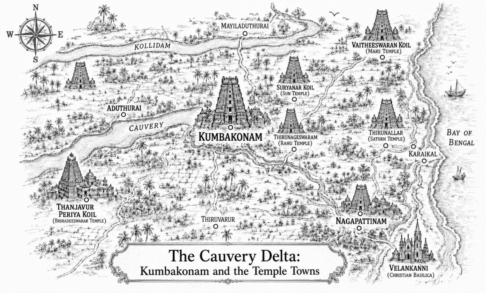
The Cauvery Delta — Kumbakonam and the temple towns of the novel
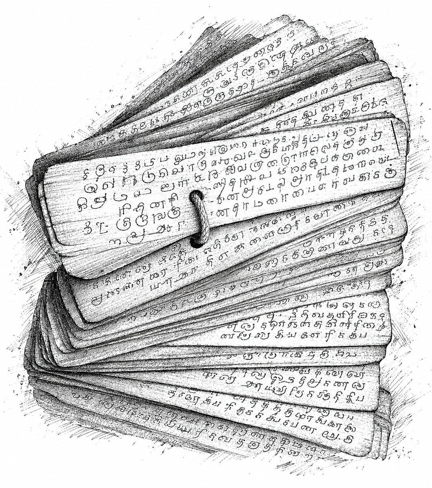
A palm-leaf bundle — an illustration of the records at the heart of the novel
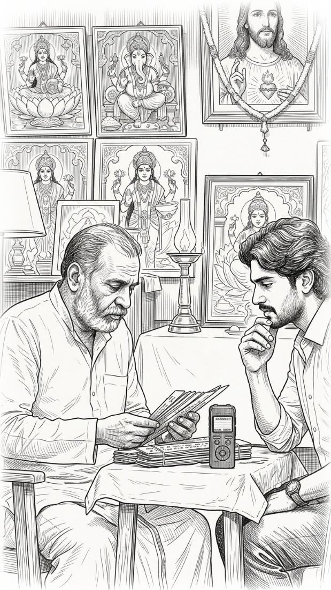
The reading — leaves, a recorder, and the gods watching from the walls
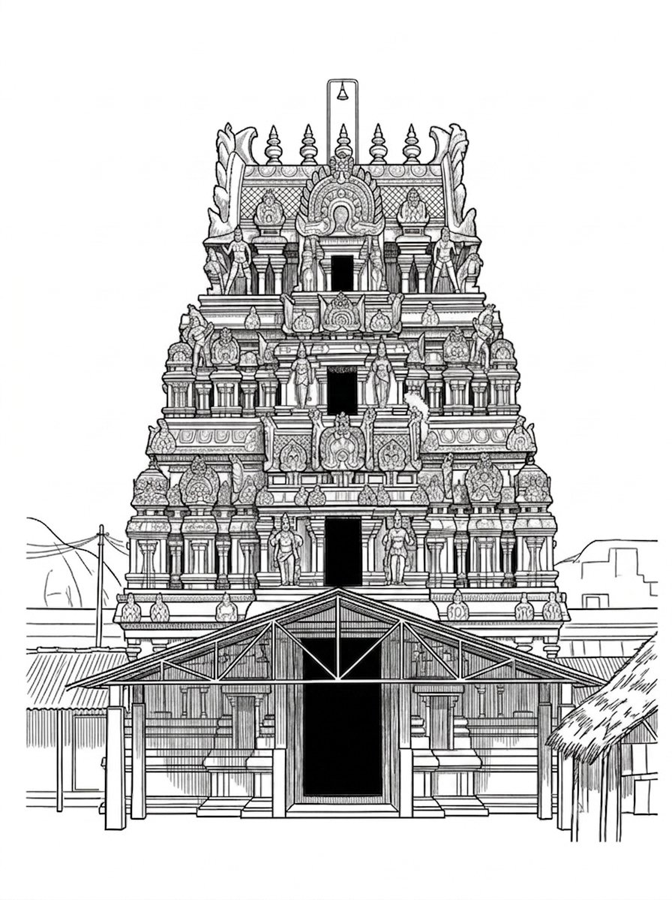
Suryanar Koil — the Sun temple
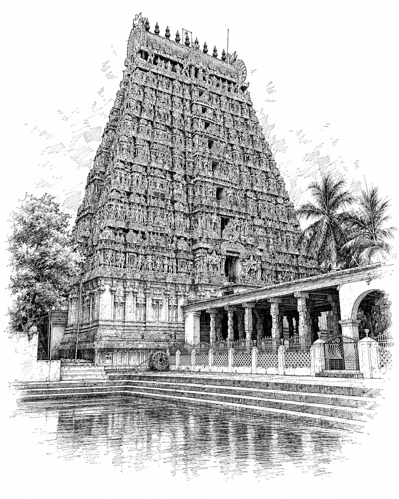
Adi Kumbeswarar Temple, Kumbakonam
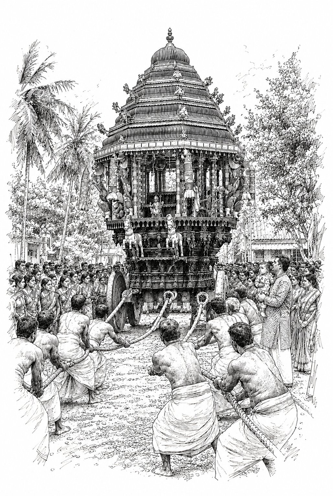
The ther — a temple chariot on festival day
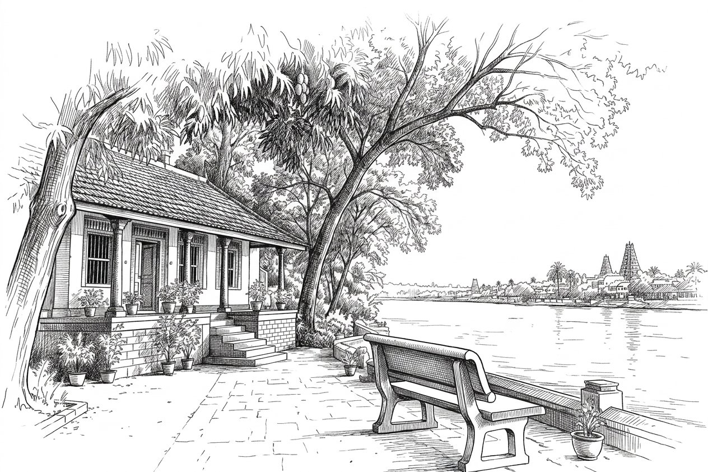
The bungalow by the river
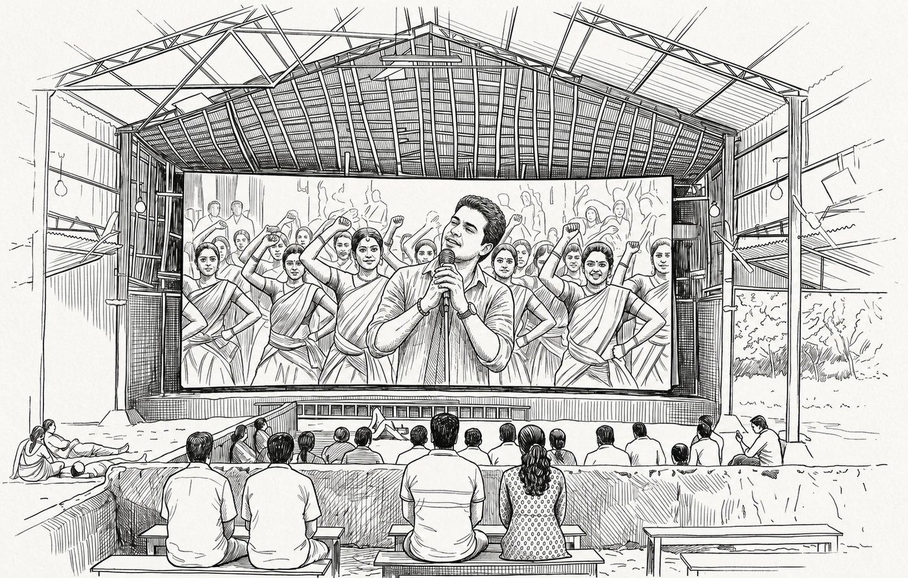
The tent kottai — the traveling tent cinema of the Tamil countryside
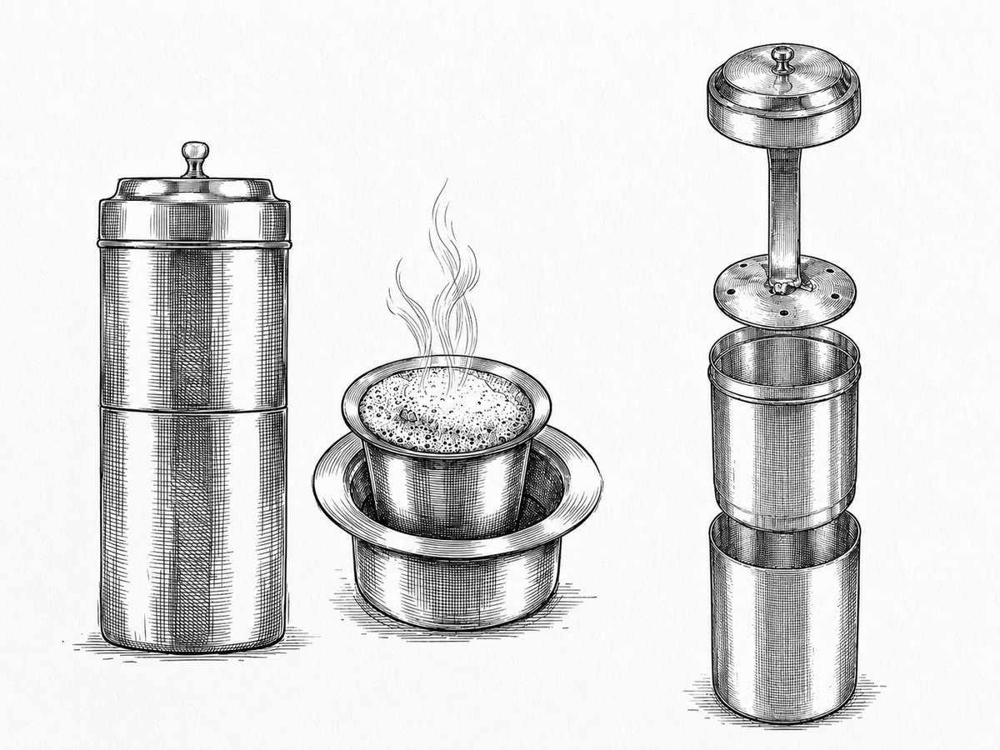
Degree coffee — the Kumbakonam filter, assembled and in parts
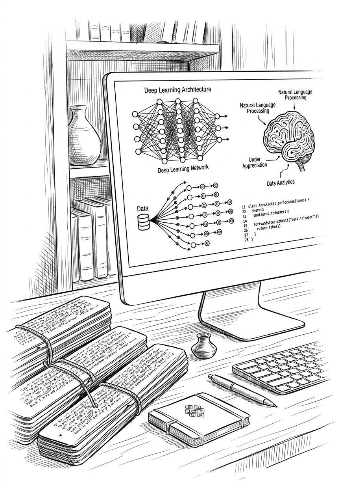
Vijay — San Jose, where the engine was built
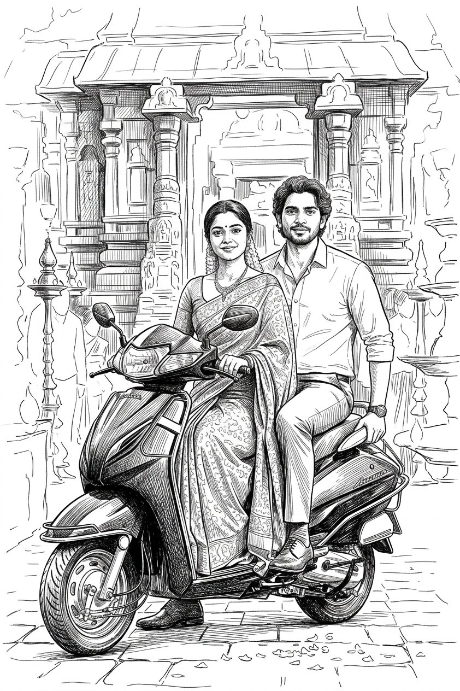
Vijay and Meera — on the Activa
Vijay and Meera — leaving the temple
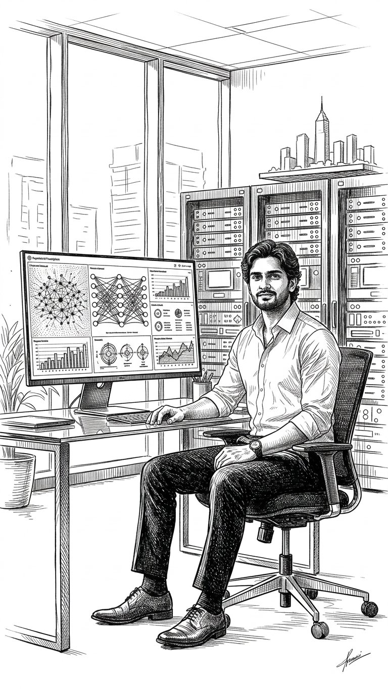
The leaves and the engine — two ways of writing a life